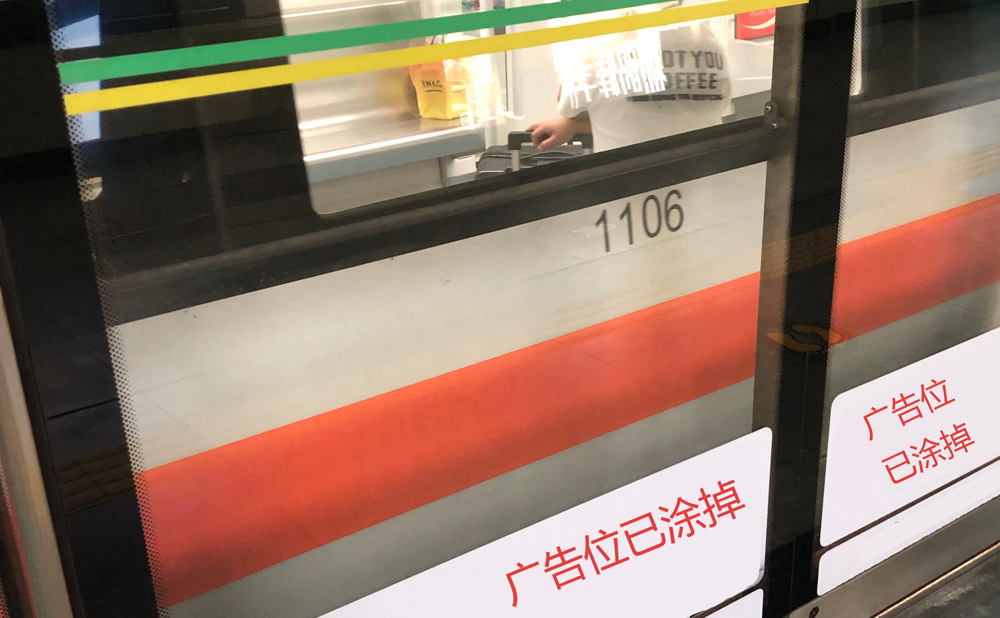
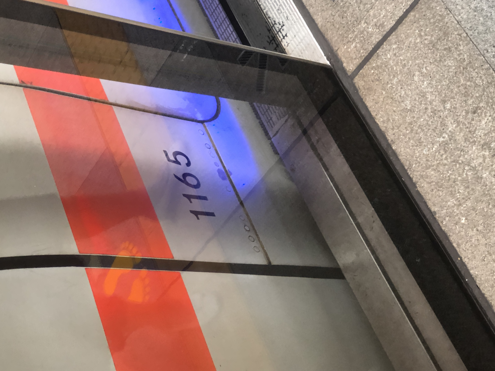
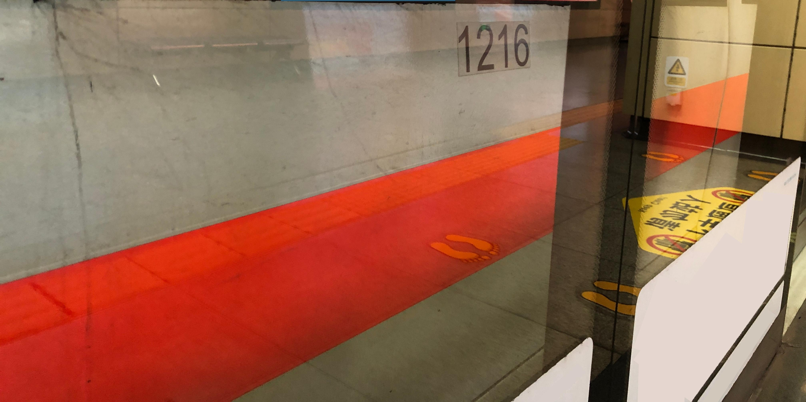

2026 年 11 月 14 日早上，1 号线一列车的灯光，全灭了。
车号 111。按本站的车型记录，它属于 01A2206庞，号段 101–122，庞巴迪制造。
接下来发生的事很短：疑似触发紧急制动，列车运行到下一站清客、回库；竹子林备车 106 随即顶上正线。
整件事没有官方通报。下面的内容来自现场观察与车迷社群转述——请当作记录，而不是结论。
一、那几分钟
先把已知的部分按顺序排一遍。
已知
- 全车灯光熄灭——不是单节车厢，是整车。
- 疑似紧急制动——车上乘客感受到明显减速/停顿。之所以写「疑似」，是因为目前只有目击描述，没有官方确认。
- 下一站清客——列车没有当场退出，而是继续运行到下一站才终止载客。
- 回库——清客后空车返回车辆段。
- 备车顶上——竹子林备车 106 投入正线运营。
未知
- 具体发生在哪个区间、几点几分
- 触发的是哪一类保护——失灯？辅助供电？还是控制回路？
- 111 车后续是修复后回归，还是直接进厂
二、111 是谁
如果要给 1 号线找一批「元老」，那 101–122 这个号段就是了。它们随 1 号线开通而来，是这条线最早的一批电客车。
本站《已遇到车辆记录》里，1 号线一共记了四个车型：
- 01A2206庞｜101–122｜庞巴迪
- 01A0406長｜123–126｜长春轨道客车
- 01A2606株｜127–152｜株洲电力机车
- 01A3306株｜153–185｜株洲电力机车
111 就在第一行里。它和这次顶上来的 106，是同一批车。
这批车我拍到过四列：110、116、119、121。照片放在下面——不是 111 本人，是同一个号段的同型车。




三、顶上来的 106，说明了什么
备车能立刻顶上，说明两件事。一是车辆段里确实有可用的热备车；二是替补上来的 106，同样落在 101–122 这个号段里。
所以这次换车，并没有把「原装车」的占比换掉——只是从一列原装车，换到了另一列原装车。
按车迷社群的普遍说法，1 号线原装庞巴迪如今在正线上已经不多见，111 是最常被提到的那一列。这个说法我没有官方数据可以佐证，只能如实标注在这里。
四、这次失灯意味着什么
先说清楚：以下全是推测，没有任何官方说明。
「全车灯光熄灭」在电客车上，常见的方向大致有三个：
- 辅助供电系统——照明、空调和部分控制电源都靠辅助逆变器与蓄电池供给，这一路掉电，整车照明会一起黑。
- 照明供电回路——某一路熔断器或接触器动作，也可能让整列同时失灯。
- 列车控制保护动作——检测到异常时主动切除部分负载，严重时直接施加制动。
这三种情况在表象上高度相似，光凭「灯灭了」无法区分。而如果确实伴随了紧急制动，那更像是保护动作，而不是单纯的照明故障——但这也只是推测，真正的结论要等车载数据。
更值得注意的是时间点：一列服役二十余年的老车，在正线上出现整车级故障，通常会被纳入「是否继续投入运营」的评估。所以「拉去翻新」是很自然的联想。不过翻新、大修、退役是三条不同的路，具体走哪条，得运营方说了算。
五、最后
我对这批车的印象，其实来自更早的东西：车里那块老式动态闪灯图、老街站那片旧站台，还有那些年久但每晚依然亮着的灯带。
车会老，这是迟早的事。只是没想到它退场的方式，会是一整车的灯突然灭掉。
希望 111 只是歇一歇。
图片来源：本文 4 张照片为本人在不同时间拍摄的 1 号线原装庞巴迪同型车（110、116、119、121），并非 111 车本人，原图未作压缩处理。
车辆号段信息引自本站《已遇到车辆记录》。事件经过为现场观察与车迷社群转述，无官方通报，细节待补。
记录时间：2026年11月14日 · 首发于：走进新天地·Railway